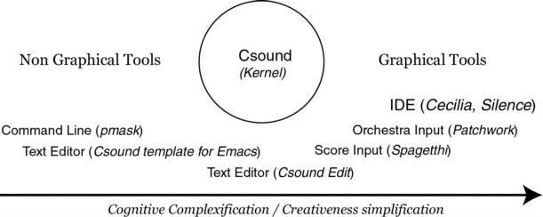
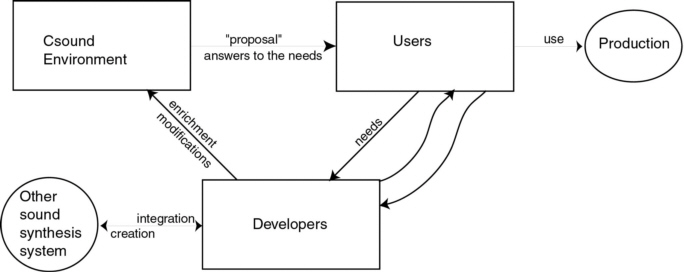

Kevin DAHAN
Universit‚ de Paris VIII
kdah21@hotpop.com
Introduction
I wrote this small article just to share some thoughts I had with the Csound community. Perhaps will you be surprised to find that it doesn't contain any code ; in fact, my main concern was to emphasize on two non-technical aspects, which can be resumed in two questions ; firstly, "how do we compose with Csound ?", and secondly "what does it take to use Csound ?".
To answer these questions, I had to develop a conceptual tool, which combined the characteristics of each aspect : the "cognitive" ("how do we compose" = "what are the (cognitive) processes we use when composing") and the "practical" one ("what does it take" = "what do we physically (e.g. software, advice, etc...) need when composing"). I will try to explain clearly the concept I found.
Csound : A general description
Before entering the main discussion, it is useful to rapidly resume some "key features" of the Csound language.
As you already know, Csound is one of the numerous descendant of the original MusicV language from Max Mathews. Because of that, Csound inherits some of the characteristics of his ancestor, mainly the division of the description of the sound in two phases, the ORChestra and the SCOre, and the use of concepts such as UG (Unit Generators). But, Barry Vercoe introduced a new feature, already present in one of his previous language, Music 11, inspired by the "hardware" synthesizer [Vercoe, 1992] - the division of the information chain in two rates : the audio-rate ("a-rate") and the control-rate ("k-rate"). The generalisation of the C-coding style (and of other structured languages) also permitted the use of conditional jumps and macros1.
The score files are very similar with those of MusicV - conceptually speaking : use of "note-lists", divided in "p-fields" (parameter fields). It must be stressed that the tempo in Csound is expressed in beats, whereas MusicV used seconds. User can call stored function tables the same way MusicV did, using the GEN functions.
Csound : A sound synthesis ecosystem
Pope, in a well-known article [Pope, 1993], stated that Csound was for him the less impressive sound synthesis language he used. His main arguments concerned the level of the language, a poor control of the orchestra and score structure, as well as an inaccurate macro system. He also stated that there was no - or little - integration with different tools (DSP, score, GUI). On the other hand, he recognized that Csound was extremely portable, fast, and that the speed of development was relatively high. Back in 2001. Csound, since 1993, knew no less than 24 versions (from 3.20 to 4.10), for the most part between 1997 and 2000 ! Each time, new opcodes were added, extending the language ; numerous direct evolutions of the sound synthesis system were made : the discontinuation of SCOT as score pre-processor (3.49), which was replaced by a stand-alone algorithmic score generator, named Cscore, filled one of the lack underscored by Pope, and, more recently, the use of 64-bit precision (4.08).
But, in fact, Pope was right. Using Csound stand-alone was a non-sense. Intrinsically, Csound had less qualities than his "opponents"2. But ease of learning, compiling speed and portability primed over complexity and "coding beauty", and the Csound community grew up, as well as a myriad of software tools for the system, becoming every day more and more essentials. We can easily divide these tools in two categories : non-graphical and graphical tools, ranging from command-line utilities to IDE. Figure 1 shows a diagram of the different software components of Csound, along with a typical example. Of course, the more utilities a tool offers, the more complicated is the cognitive process of the composition, but the actualisation of the musical idea (creativeness possibility) is greatly simplified.
 Figure 1: Different software components for Csound
The interesting fact about these software tools is that they are being created by Csound users themselves - and not by a special group of developers, detached from the composers' needs. These people are constantly linked by the mailing list, so that they know perfectly what are the preoccupations of the group. All theses aspects form what we can call an ecosystem.
An ecosystem is classically defined as being the ensemble of the organisms living in a particular environment (populations dynamics), to which is added the physic environment itself (landscape dynamics). We can draw a comparison between this definition and Csound : the kernel (Csound itself) and the software tools can be identified as being populations, and users, landscape (!). Figure 2 shows the different dynamical relations between populations and landscape, as well as some hypothetical (but credible) views. Users need specific tools to produce sound, and developers - could be users - are charged to satisfy these needs (to actualise needs). They propose enrichment, modifications, to the Csound environment, in form of new kernel code or standalone tools - eventually don't referring to needs. These proposals are accepted by users (they produce using these new tools) or not (and the code will be retired later, e.g. SCOT).
 Figure 2: Csound as an sound synthesis ecosystem3
Conclusion
This small article was an attempt to see more clearly what was the different relations which were build around Csound, and how they have influenced our approach of the sound synthesis design with this tool. I personally feel that a 2001 Csound user can't just use the Csound kernel along with a notepad. Csound tools aren't just making the composition process easier with the use of pre-programmed algorithms, they also (and above all) extend the universe of compositional possibilities, by proposing new ways of thinking the relation to Csound sound design.
References
[Pope, 1993] - Pope, Stephen Travis, "Machine Tongues XV : Three packages for software sound synthesis", in Computer Music Journal, 17(3), MIT Press, Cambridge, 1993.
[Vercoe, 1986] - Vercoe, Barry, The public Csound Reference Manual, MIT, 1992.
1 Even if the influence of C in Csound is less obvious than in Cmix or cmusic.
2 From a technical point of view.
3 Note the original relation between "developers" and "other sound synthesis system".